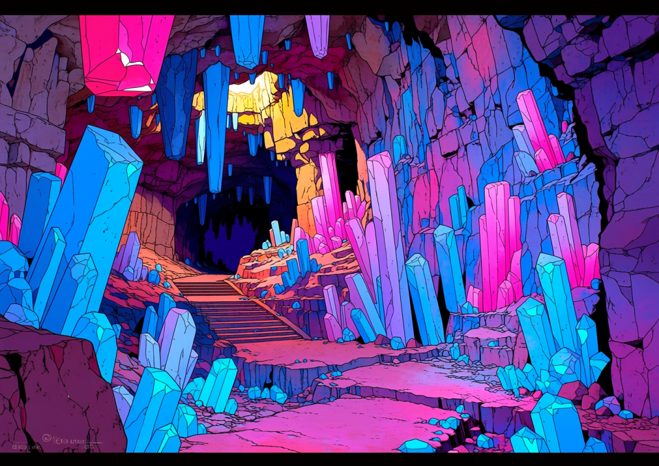
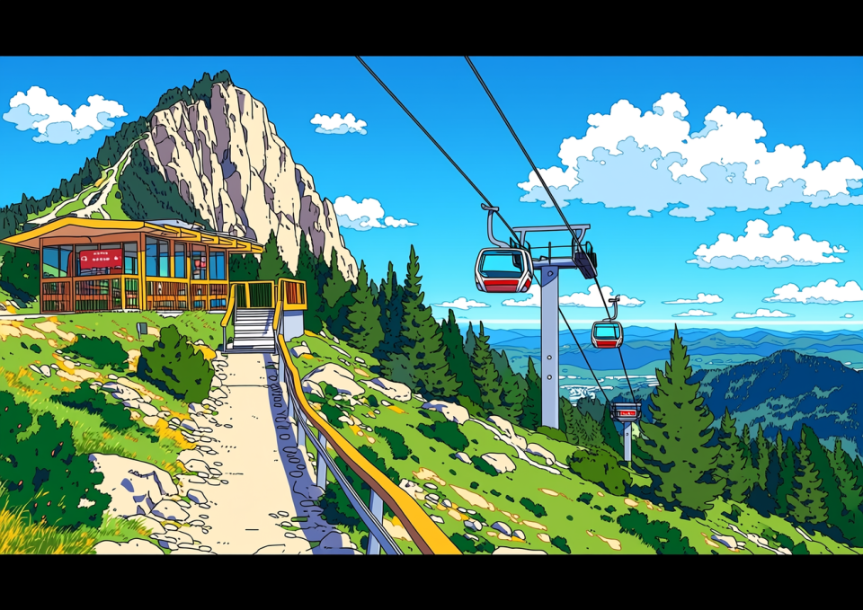
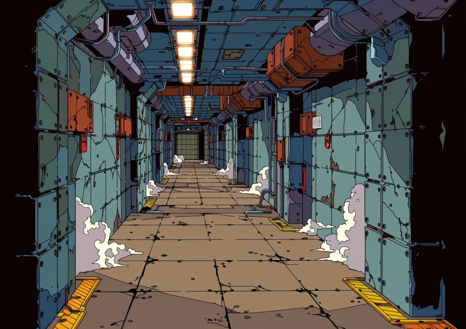
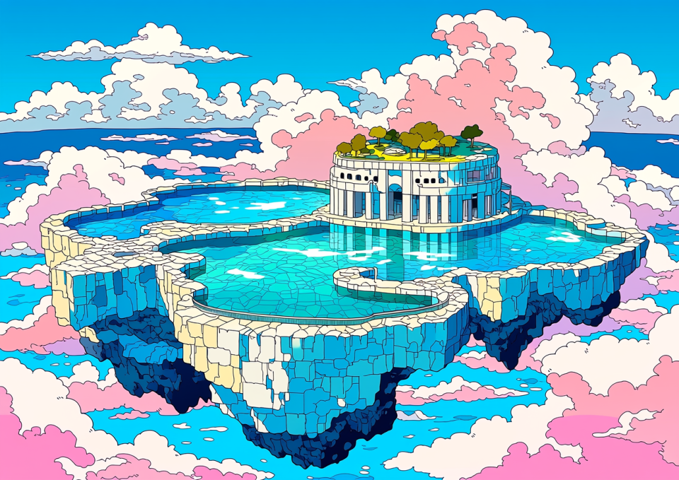

やっほー！ 編集部のミカです！
最近「ダンジョン＝怖い」とか思ってない？ ノンノン！
いま王都周辺のダンジョンは「デートスポット」や「稼ぎ場」として超進化してるの！
今回は、初心者でも安心な場所から、ちょっと背伸びしたい人のためのスポットまで、厳選4つを紹介しちゃうよ～！

「え、これダンジョンなの！？」 って驚くこと間違いなし！ 壁一面がキラッキラの発光クリスタルで覆われてて、もう幻想的すぎてヤバイ。 最近はカップルだらけで、ここで告白すると成功率が上がるって噂も…？

「はじまりの洞窟」がリニューアルしてたって知ってた？ なんと、中腹まで自動ゴンドラで行けちゃうんです！ 汗だくにならずに絶景カフェまで行けるとか、最高すぎない？

「お上品な場所は飽きた」「金が欲しい」…そんなキミにはここ。通称『鉄板』。 その名の通り、そこら中が鉄板で補強されてる無骨なダンジョン。

最後はここ！ みんなの憧れ、空に浮かぶ島『エデン』！ 入場料は高いけど、一生に一度は行きたいよね～。 帝国側のギラギラしたドーム・シティとは違って、こっちは「究極の癒やし」がテーマ。
いかがでしたか？ 週末はダンジョンで「非日常」を味わっちゃおう！
あ、でも「死んでも文句言わない」のがダンジョンの鉄則。
準備運動とポーションはお忘れなく！
それじゃ、いってきま～す！